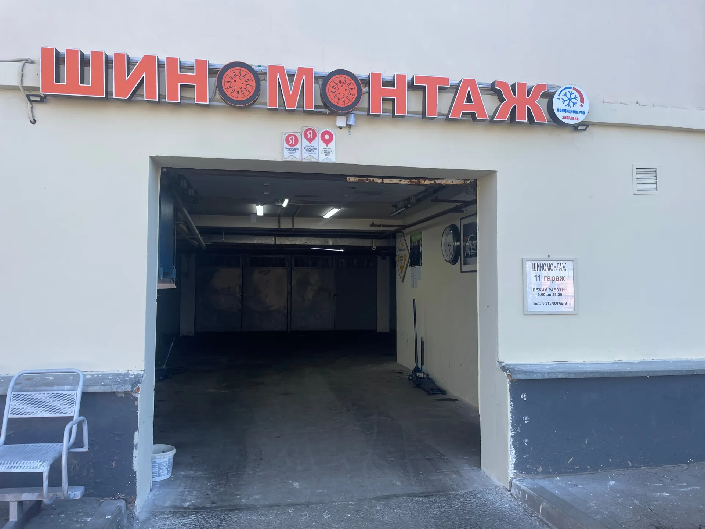
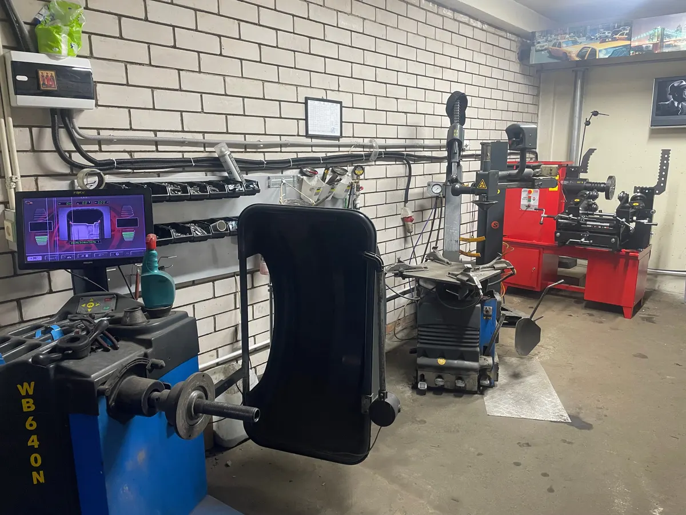
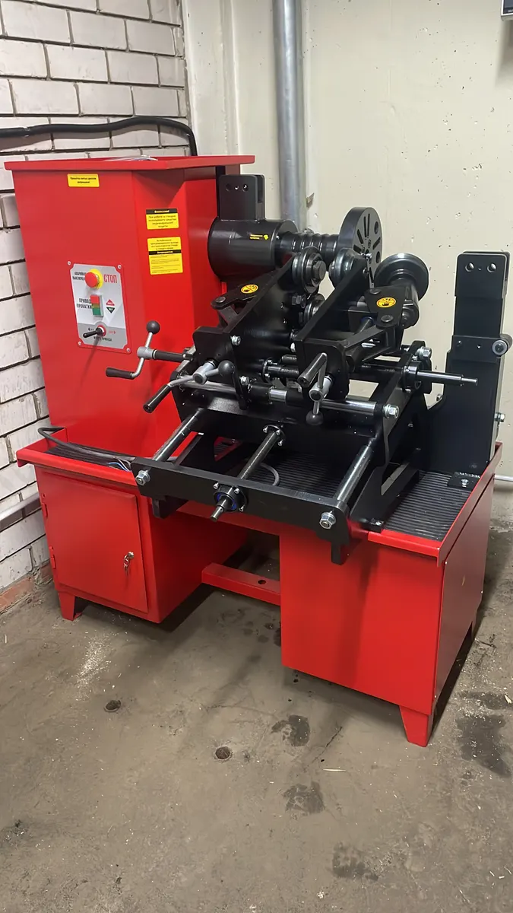
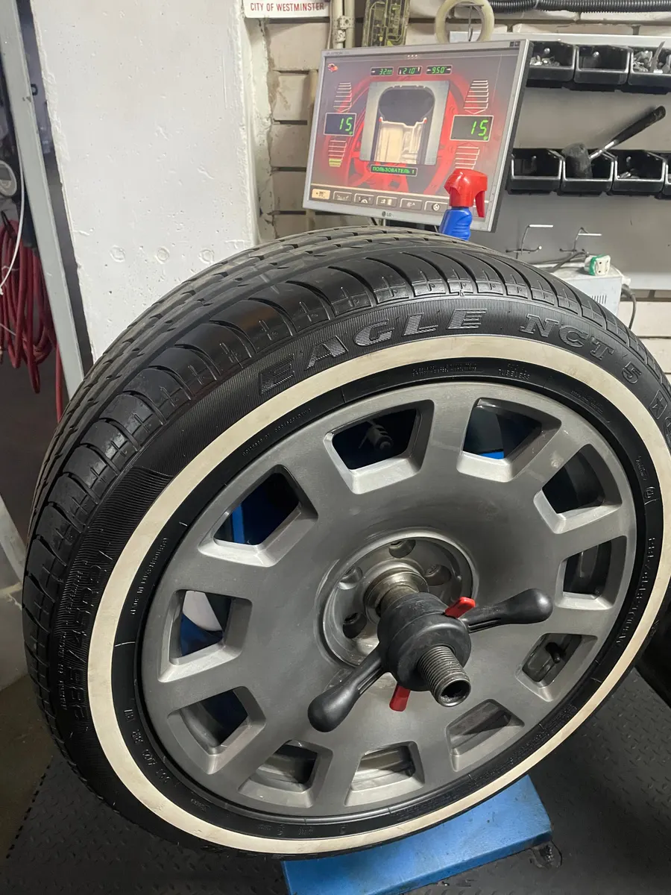

Шиномонтаж · Москва, метро Курская
Шиномонтаж в центре Москвы – каждый день до 23:00
Чиним проколы и боковые порезы, правим диски, переобуваем и берём шины на хранение. Заодно заправим кондиционер.
- Метро Курская, Путейский тупик, 6
- Запись в WhatsApp и по телефону
- Оплата наличными, переводом или онлайн

Цены
Цены указаны «от» и для легковых машин. Для кроссоверов, минивэнов и джипов переобувка дороже: напишите радиус и модель – назовём сумму.
Переобувка, комплект 4 колеса
- R13–R14от 2 500 ₽
- R15от 2 800 ₽
- R16от 3 000 ₽
- R17от 3 500 ₽
- R18от 4 000 ₽
- R19от 4 500 ₽
- R20от 5 500 ₽
- R21–R22от 6 500 ₽
- R23–R24от 12 000 ₽
Ремонт шин и дисков
- Горячая вулканизацияпроколы и боковые порезыот 2 000 ₽
- Правка дискалитые, кованые, штампованныеот 2 000 ₽
- Порошковая покраска дискаот 3 000 ₽
- Шины RunFlat, доплатазависит от радиусаот 500 ₽
Кондиционер, хранение, шумоизоляция
- Заправка кондиционерас диагностикой3 000 ₽
- Сезонное хранение шинкомплект6 000 ₽
- Шумоизоляция шинкомплект, зависит от радиусаот 10 000 ₽
- Чистка и герметизация бортовза колесоот 300 ₽
В переобувку входят демонтаж, монтаж и балансировка.
Как проходит
- 01
Пишете или звоните
Говорите, что случилось с колесом и какой радиус, выбираете время.
- 02
Заезжаете в Путейский тупик
Светлое здание, над воротами красная вывеска «Шиномонтаж», у входа табличка «11 гараж».
- 03
Мастер смотрит колесо
Называет, что нужно сделать и сколько это стоит.
- 04
Делаем и отдаём машину
Оплатить можно наличными, переводом или онлайн.



За чем к нам едут
С проколом – и поздно вечером
Работаем до 23:00. В отзывах пишут, что заплатку ставят за 15–20 минут.
С погнутым диском
Правим литые, кованые и штампованные диски любого размера. Станок стоит в боксе.
Не только с колёсами
Заправляем кондиционеры, храним шины, красим диски порошком, делаем шумоизоляцию шин.
Отзывы с Яндекс.Карт
«Погнул диск на бмв. Позвонил, сразу ответили проконсультировали. Приехал. Сделали диск на 5 из 5. Быстро качественно сделали и заодно обслужили все колеса. Ещё заправили кондиционер. Рекомендую место. Ребята профессионалы.»
Azat Ainetdinov · 29 мая 2026
«Приехал за 10 минут до закрытия, ребят предупредил по телефону, сказали, что без проблем дождутся, на часах было уже двенадцатый час ночи,. Вдвоем оперативно поменяли резину на зимний сезон, спасибо!»
Даниил · 8 декабря 2025
«Обслуживаю 2 машины уже 4 год + хранение резины. Очень довольна качеством оборудования, качеством работ и цен. Профессиональный владелец, всегда подскажет и поможет в любых вопросах.»
Натали Гаврилова · 10 ноября 2025
Отзывы с карточки на Яндекс.Картах, без правок.
Частые вопросы
Как вас найти?
Путейский тупик, 6, стр. 1, гараж 11, метро Курская. Светлое здание, над воротами красная вывеска «Шиномонтаж», у входа табличка «11 гараж».
Нужно ли записываться?
Лучше договориться заранее в WhatsApp или по телефону. Работаем каждый день с 09:00 до 23:00.
Сколько стоит переобувка кроссовера или джипа?
Дороже, чем легковой машины. Напишите радиус и модель – назовём сумму до приезда.
Ремонтируете боковые порезы?
Да, горячей вулканизацией, от 2 000 ₽ за колесо.
Можно оставить шины на хранение?
Да, сезонное хранение комплекта стоит 6 000 ₽.
Запишитесь или приезжайте
- Адрес
- Путейский тупик, 6, стр. 1, гараж 11, Москва
- Часы
- Каждый день 09:00–23:00
- Телефон
- +7 (915) 000-66-79